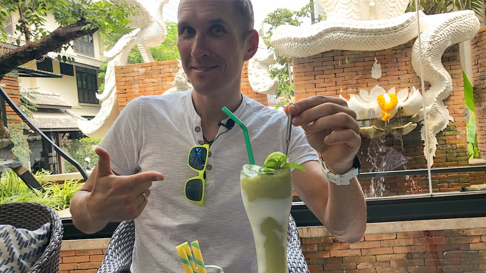

Believe me, you don’t know how delicious you food until you run 36 km (22 miles) in mountains 🏃🏽♂️⛰ 😄 Chiang Mai has really amazing trails to run, nature to see and food to taste 👍🏼 recovering with lots of kiwi smoothies (vitamin C is important to prevent inflammation process in your body), pizza (cheese and ham as source of protein to rebuild muscles, and now I have a good excuse to eat delicious wood-fire pizzas 😂), also had plenty of green tea with milk (you need it to reduce damaging effect of free radicals that, as scientists argue, have a signaling role in DOMS- delayed onset muscles soreness). Today I’m resting and exploring local temples with my other half (watch our stories) and tomorrow off I go for another awesome trail run! 🤙🏼😉🏃🏽♂️ . . . . . Поверьте, вы не знаете насколько вкусна ваша еда пока вы не пробежите 36 км по горам 🏃🏽♂️⛰😄 В Чианг Май есть действительно крутые трэйлы для бега, шикарная природа и вкусная еда! 👌🏼 восстанавливаюсь после 36-километровой пробежки большим количеством киви-смузи (витамин С очень важен для предотвращения воспалительных процессов в теле после изнурительной тренировки), пиццей (сыр и пармская ветчина как ресурс протеина который нужен вам для восстановления ваших мышц, ну и мой выбор протеинов был определён тем, что у меня теперь уж точно есть оправдание объесться вкуснейшей пиццей сделанной в дровяной печи 😂), я также пью очень много зеленого чая с молоком (он вам нужен, чтобы снизить губительный эффект свободных радикалов, которые, по мнению учёных, провоцируют синдром отсроченной мышечной боли. Сегодня по расписанию отдых и поход по местным храмам с моей второй половиной (смотрите наши истории) а завтра время для новой крутой пробежки по горам 🤙🏼😉🏃🏽♂️ ___ #triathlontraining #ironmantraining #swimbikerun #marathontraining #ironmantri #trailrunning #orbea #cervelo #specializedbikes #giantbikea #canyonbikes #chiangmaitrailrunning #chiangmai #runnersofinstagram #runnersworld #trailrunner #pizza #woodfiredpizza #smoothietime
2018-04-19 19:59:14
Back to main page